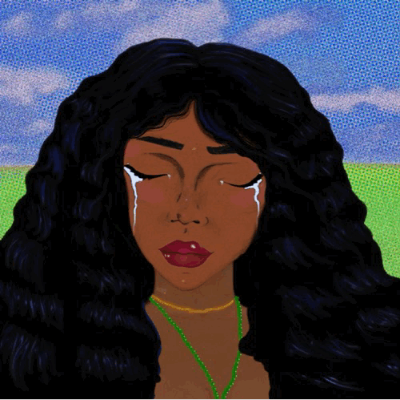

“Jodie” Animated MV
Timeline:
4 days; approximately 15-20 hours of work
Development Process:
This song is something that really made feel and think a lot. The thought process behind it was to make a cool comic strip type animation, using my own art work and creations.. the vibe I went for in my opinion really aligned with her music/albums concept, I wanted to showcase my creativity as this was my first ever animation; all self taught, and hand drawn (most of it). The development process consisted of lots of sketching, creating assets using Adobe Illustrator, Photoshop, and finally animating on After EffectsKey Takeaways:
- My commitment to spending 15-20 hours over four days on a self-taught animation project showcases my passion for the art form.
- The intention to showcase my creativity, particularly on my first-ever animation, highlights my willingness to take creative risks and explore new skills.
- The combination of my hand-drawn elements with digital tools showcases my versatile approach to animation, blending traditional and modern techniques.

the sketching process
the animation process